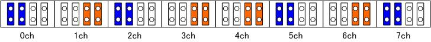

SPIDAR-GCCの組立マニュアル
※ 注 意 ※
PCの電源投入時にコントローラの電源がオンになっている場合、PCが起動しない場合があります。
PCの電源投入時にはコントローラの電源がオフになっていることを確認してください。
SPIDAR-G (一体型Cフレームタイプ)

SPIDAR-GCC 組立ムービー
印刷用マニュアル： SPIDAR-GCC組み立てマニュアル.pdf参考にしてください．
1.モータ接続フラットケーブルの作成(クリックするとファイルが再生されます。)
モータ回転方向設定ジャンパピンについて（※内部情報）

（図のピンは、基板を電源接続ジャック、USBジャックを下向きとして見た場合の配置）
※ジャンパピンは3A以上流せるものを推奨
動作確認
標準設定ファイル：spidar_gcc_001.xml